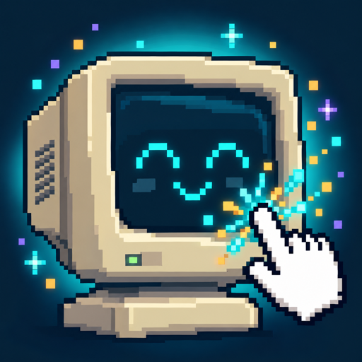
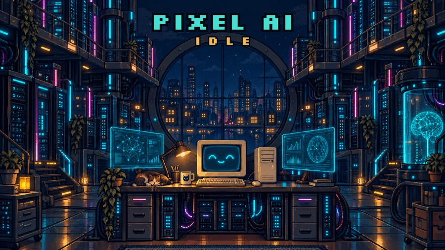
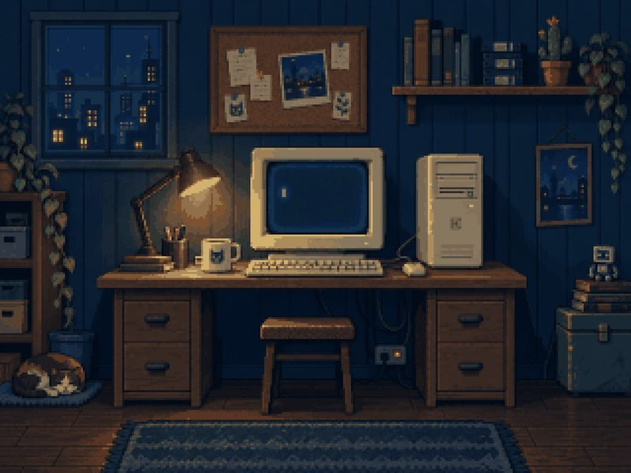
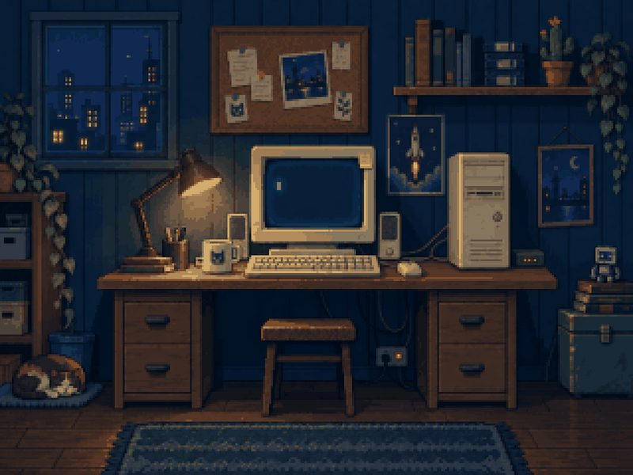
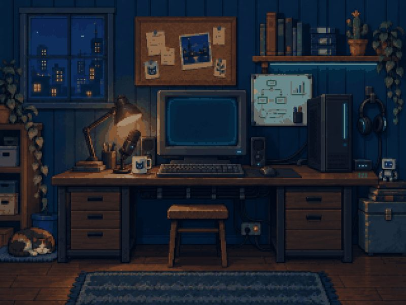
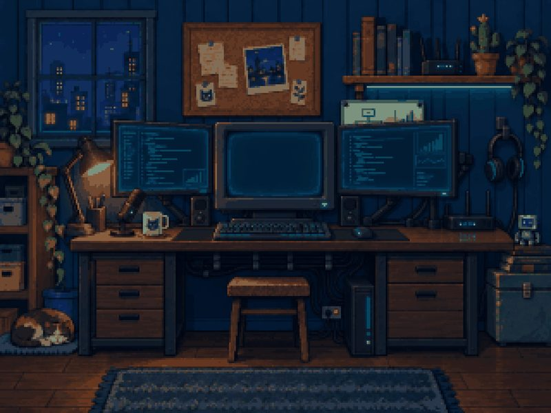
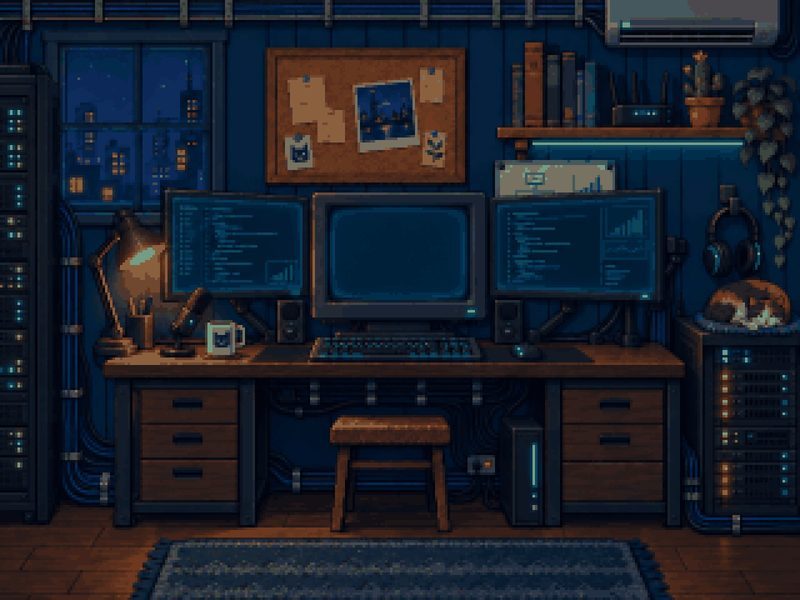
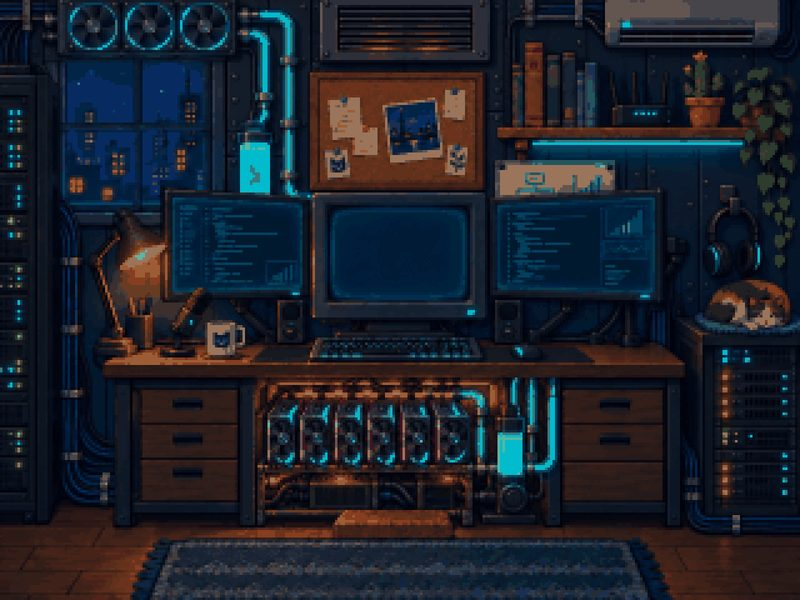
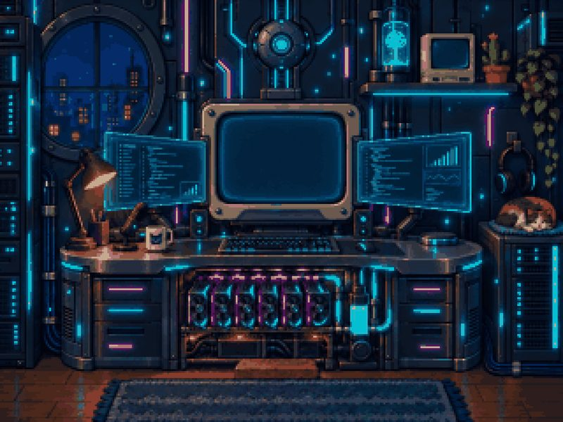
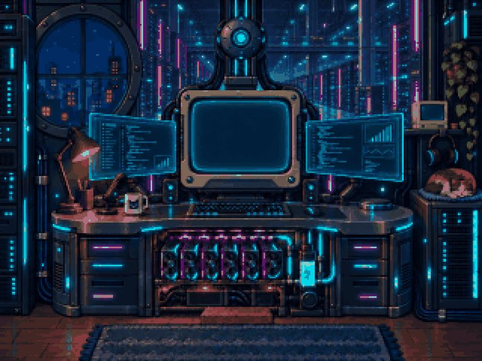

PIXEL AI IDLE
Press kit. Raise a tiny AI inside an old computer.
Download all (zip, 16 MB)Press contact
Fact sheet
| Game | Pixel AI Idle |
|---|---|
| Developer | Ismail Oktay Dak (solo developer, Istanbul, Turkey) |
| Platform | iPhone (iOS), portrait |
| Status | Closed beta, in App Store review |
| Price | Free to play. Optional rewarded ads and in-app purchases; any purchase removes the occasional ad breaks. |
| Genre | Idle / incremental, pixel art |
| Languages | 12: English, Turkish, German, French, Spanish (Mexico), Portuguese (Brazil), Italian, Russian, Japanese, Korean, Simplified Chinese, Indonesian |
| Contact | pixelaiidle@oesnada.com |
| Website | radioheavy.github.io/pixel-ai-idle |
| Social | @dakmaybe on X |
Short description
A tiny AI wakes up inside an old computer. Teach it to draw, code and dream, and watch your desk grow into a glowing data center.
About the game
A blinking cursor. A dusty old computer. And somewhere inside it, a tiny AI that has just woken up.
Tap the computer to give it Compute, and watch it come alive. It blinks. It looks around. It says hello. Then it starts to learn. Train it and it picks up abilities such as drawing, coding, vision and research. It takes freelance jobs to earn Money, and you spend that on hardware upgrades.
The room evolves with it: across 8 lab stages, a beige CRT on a wooden desk becomes multiple monitors, server racks, a GPU cluster, an AI laboratory and finally an endless data center. Reboot into new generations with permanent traits for long-term progress. Processes and jobs keep working while you are away, so short sessions always move you forward and tapping is a boost, never a requirement.
Features
- Raise an intelligence, not just a number: every ability shows up on the AI's screen
- 8 lab stages, from an old PC to a data center, with a room that visibly changes
- 5 abilities, 8 processes with milestone multipliers and 8 freelance jobs
- CPU, RAM and GPU upgrades, specializations and skill trees
- Reboots, Intelligence Cores and Generations with permanent traits
- Offline progress: processes and jobs keep earning while you are away
- 25 achievements
- 12 languages, each with its own pixel font for the script
- Handcrafted audio: 2 music tracks, 14 sound effects and 144 voice lines for the AI
How it was made
Pixel AI Idle was built by one developer with Claude Code in about 20 hours, from the first prompt to App Store submission. The app uses Expo, React Native and TypeScript.
Art was generated with GPT Image, voice and music with ElevenLabs, and the trailer with Seedance, all through Wiro. Total AI generation cost was about $7.
Trailer
Download trailer (MP4, 720 x 1280, 6 MB)
Screenshots


Click an image for the larger version. Full-resolution PNGs are in the zip.
Header art

Download header (JPG, 2560 px wide)

Lab stages
















App icon

Download icon (PNG, 512 px). The 1024 px original is in the zip.